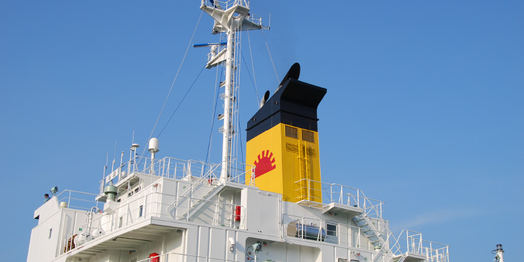

保有船舶
| 海嶺【KAIREI】 （白油兼ケミカル船） |
|
|---|---|
| 総トン数 | 3,778 トン |
| 主要寸法 | 102.14×96.00×16.00×8.500(m) |
| 居住区 | 15部屋（全部屋にシャワー・洗浄式トイレ完備）船内Wi-Fi完備 |
| 主要貨物 | ガソリン、ナフサ、灯油、軽油、エタノール、BTX、ETBE 他 |
| 主機関 | ディーゼル機関 赤坂A45S 最大出力3,309Kw（4500ps）×220/220mm⁻¹ |
| 発電機 | ヤンマー6AYL-ET 491kw×3 |
| 貨物油ポンプ | 電動ディープウェルポンプ×10 335ｍ３/h ＊同時6 台運転可能 |
| その他 | ＊ 鉄道建設・運輸施設整備支援機構殿e- シップ基準対応 ＊ 二重船殻構造 |
| 運航者 | 上野トランステック株式会社 |
管理船舶
| 清和丸【SEIWAMARU】 （アルコール専用船） |
|
|---|---|
| 総トン数 | 446トン |
| 主要寸法 | 59.22×54.50×9.60×4.30（m） |
| 居住区 | ７部屋 船内Wi-Fi完備 |
| 主要貨物 | 精製アルコール |
| 主機関 | ディーゼル機関 阪神6LH28G 最大出力735Kw |
| 発電機 | ヤンマー6HAL-DTN |
| 運航者 | 上野ロジケム株式会社 |